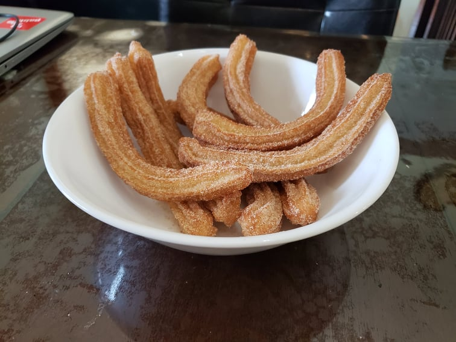

Churros

Ingredients:
Churros:
- 1 cup Water
- 6 tbsp Unsalted butter
- 1 tbsp Sugar
- 1 tsp Vanilla extract
- 1/2 tsp Salt
- 1 cup (140 g) Flour
- 3 Eggs
- Vegetable oil, for frying
Cinnamon Sugar Coating:
- 1/2 cup Sugar
- 1 tsp Cinnamon
Instructions:
- Combine the cinnamon sugar mixture and place into a shallow bowl.
- Add the water, butter, sugar, vanilla extract, and salt to a pot. Mix and bring to a boil. Once it comes to a boil, remove from heat and mix in the flour with a wooden spoon until the mixture is smooth.
- While the mixture cools down for a couple of minutes, place 1 1/2 inches of oil into a pot and heat to about 330 degrees.
- While waiting for the oil to heat, mix in the eggs to the mixture one at a time until the mixture is very smooth. Transfer the mixture to a piping bag with a large closed star piping tip, making sure there are no air bubbles.
- Working in small batches, pipe 6 inch pieces of the dough into oil. Cook for 2-4 minutes on each side or until golden.
- Remove the churro from the oil and place onto a paper towel lined plate for about 30 seconds. Then coat the churro in the cinnamon sugar before placing into a serving bowl. Serve on its own or with hot Champurrado.